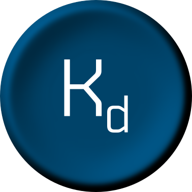
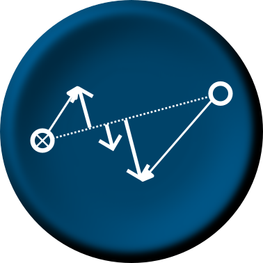
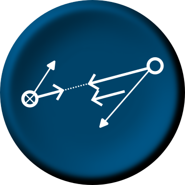
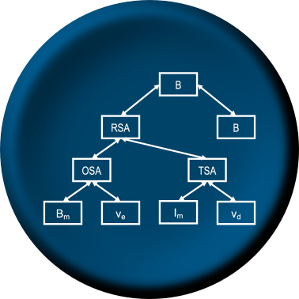
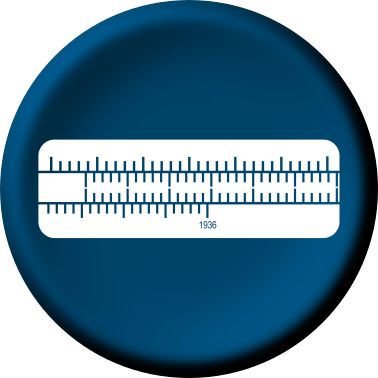

WO-Trainer Uboote
Version 0.9
Menu
Gegnerkurs

Gegenpeilung
Gegnerkurs am Sehrohr
Grenzkurs
Distance of Track
Rechenschieber
30M Regel
Kopfrechnen
Spacing
Speed Across

OSA und TSA
RSA
ΔOSA
Speed Length

OSL und TSL
RSL
tCPA
1936-Verfahren
1936-Verfahren am Sehrohr
1936 in der Kursänderung
1936 bei stationären Objekten
1936 im CPA
1936 bei stehender Peilung
Kursbestimmung mit 1936
Family Tree

RSA Family Tree
ΔOSA Family Tree
CEP Interpretation
Kurveninterpretation
Manövererkennung
Manövererkennung bei Kursänderung
CEP Trainer

Basis Trainer
Elite Trainer
Lookinterval
Gefahrenkreis
Lookinterval Seeraum
Lookinterval Fahrzeug
LI Trainer
T1/T2 Verfahren
PD Trainer
Schiffserkennung
Alle Flotten
Russische Flotte
Deutsche Flotte
Dänische Flotte
Englische Flotte
Französische Flotte
Italienische Flotte
Niederländische Flotte
Polnische Flotte
Schwedische Flotte
Spanische Flotte
Statistiken